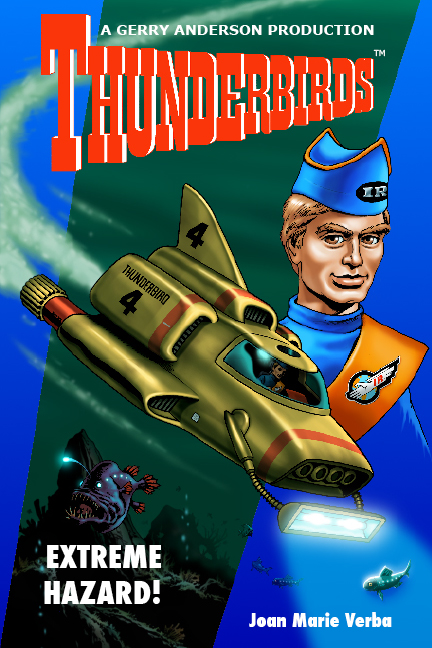

THUNDERBIRDS books
Licensed novels based on the series by Gerry and Sylvia Anderson





EPISODES PAGE
Thunderbirds episodes, in order:
Trapped In The Sky
International Rescueís first mission: to save the Fireflash, a supersonic aircraft on which a bomb has been placed to explode on landing.
Pit Of Peril
The U.S. Armyís new land vehicle, the Sidewinder, finds itself at a bottom of a pit, unable to get out...until International Rescue comes to save the day.
City Of Fire
Thompson Towers, the largest building in the world, is on fire and in danger of collapsing and killing a family trapped in the basement.
Sunprobe
The first human crew to go to the Sun is in danger when it canít break orbit.
The Uninvited
Scott is shot down by mysterious planes originating from a long-lost pyramind.
The Mighty Atom
An atomic reactor is in danger of overloading and spreading radiation.
The Vault Of Death
A bank employee becomes trapped in a high-tech vault so sophisticated it cannot be opened.
Operation: Crashdive
The Fireflash supersonic passenger jet fleet is crashing.
Move...And You're Dead
Alan Tracy and Grandma Tracy become trapped on a bridge which is about to explode.
Martian Invasion
Actors filming a science fiction movie become trapped in a cave-in.
Brink Of Disaster
Jeff Tracy, Brains, and Tin-Tin find themselves on a runaway monorail on a test run.
The Perils Of Penelope
A scientist disappears, and Lady Penelope tries to find him.
Terror In New York City
The U.S. Navy mistakes Thunderbird 2 for an intruder and fires missiles at it, disabling it. Meanwhile, in New York City, the Empire State Building collapses while being moved to a new site, trapping a television reporter and his cameraman.
End Of The Road
A friend of the Tracy family becomes trapped on a mountain while trying to build a road.
Day Of Disaster
Astronauts headed for Mars find themselves underwater when their rocket ship is dumped into a river on the way to launch.
Edge Of Impact
Jeffís old buddy Col. Casey is testing out a new attack airplane which keeps crashlanding.
Desperate Intruder
The Hood is after the treasure that Brains and Tin-Tin are helping an archeologist find.
30 Minutes After Noon
The Eerdman gang is out to steal government secrets and wreak havoc at a British atomic plant.
The Impostors
When thieves impersonate International Rescue to get hold of top-secret plans, the U.S. government tries to find International Rescueís headquarters.
The Man From MI-5
Lady Penelope goes after criminals who are stealing plans for nuclear weapons.
Cry Wolf
Two Australian youngsters accidentally call International Rescue, then need rescuing for real when The Hood traps them in an abandoned mine.
Danger At Ocean Deep
A cargo barge mysteriously explodes, and the following barges are in danger.
The Duchess Assignment
Criminals kidnap a friend of Lady Penelopeís for a valuable oil painting.
Attack Of The Alligators!
Biologists attempting to create giant animals find that their formula has gotten into the swamps, creating giant alligators which threaten them.
The Cham-Cham
Air Force jets carrying nuclear weapons are disappearing, and the disappearances seem to be related to a musical groupís popular song.
Security Hazard
A small boy gets into Thunderbird 2 and is carried to Tracy Island.
Atlantic Inferno
An offshore oil rig is in danger of collapse.
Path Of Destruction
A Crablogger goes out of control and International Rescue must stop it.
Alias Mr. Hackenbacker
Criminals hijack an airplane where Lady Penelope is participating in a fashion show.
Lord Parker's 'Oliday
A solar reflector topples and the solar mirror endangers a town.
Ricochet
A pirate satellite radio station is accidentally damaged and the two crewmembers are in danger.
Give Or Take A Million
A couple of thieves attempt a bank robbery during a Christmas celebration.